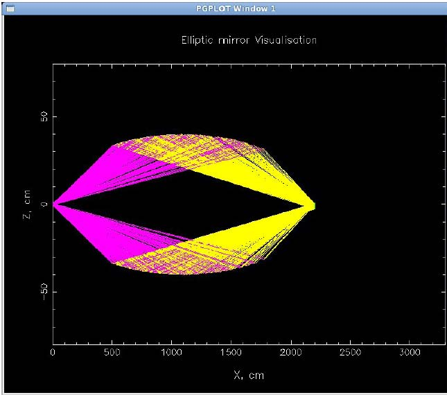

Figure: Elliptical mirror| Parameter Unit |
Description |
Range or Values |
Command Option |
| semi axis X, Y, Z [cm] |
semi axes of the elliptic mirror in x-direction (beam), y-direction (left) and z-direction (up) | >0 | -a -b -c |
| Center position main X, Y, Z [cm] |
x-, y- and z-component of the center of the ellipsoid | any | -d -e -k |
| Rotation angle [deg] |
angle of rotation of the ellipsoid | [-90°,90°] | -g |
| Rotate around the axisfield range file | axis about which the ellipsoid is rotated | 'OX' 'OY' 'OZ' |
-g |
| X_MIN, X_MAX [cm] |
range (over which the mirror exists) in beam direction (x-axis) | -Axis_x<XMIN<XMAX<Axis_x | -A -C |
| Y_MIN, Y_MAX [cm] |
range (over which the mirror exists) in horizontal direction perpendiculat to the beam (y-axis) | -Axis_y<YMIN<YMAX<Axis_y | -D -E |
| Z_MIN, Z_MAX [cm] |
range (over which the mirror exists) in vertical direction (z-axis) | -Axis_z<ZMIN<ZMAX<Axis_z | -H -K |
| output X, Y, Z [cm] |
x-, y- and z-component of the origin of the output frame (in the input frame) | any | -s -t -w |
| Activate visualisation | activation of visualisation of the neutron trajectories (see figure) | 'yes' 'no' |
-y |
| Type of visualisation | plane to which the trajectories are projected for visualisation | 'XZ' 'XY' 'YZ' |
-Y |
| Full visualisation | yes: visualisation of all neutrons paths no: only reflected neutrons are shown |
'yes' 'no' |
-v |
| Output device | for Unix only: choice of output format | 'x-windows' 'ps file' |
-l |
| Spin_up-/down reflectivity file | input data file containing the reflectivity curve R(Q) for spin-up and for spin-down neutrons resp. (in the same form as it is used in the guide module) | - | -i -I |
| surface waviness [deg] |
amplitude of waviness of a rectangular distribution this value is the maximal angle of deviation of the surface normal from the ideal normal. |
>=0 | -q |
| Reflected neutrons | yes: only reflected neutrons are treated further on no : all neutrons are treated further on |
'yes' 'no' |
-u |
| Ideal reflection | yes: ideal reflection (R=1) no: reflectivity from files |
'yes' 'no' |
-R |
| polarisation | yes: split into spin-down and spin-up reflectivity no: spin-up reflectivity for all neutrons |
'yes' 'no' |
-p |
| neutron spin axis | axis for spin quantization | 'OX' 'OY' 'OZ' |
-V |
| air humidity [%] |
for 'air attenuation'='yes': relative air humidiy (at 293 K), used to calculate beam attenuation in air | [0,100] | -r |
| air attenuation | no: no attenuation of the neutron beam in air yes: activation of attenuation of the neutron beam in air for T=293 K and the given humidity |
'no' 'yes' |
-z |
Last modified: Tue May 8 17:08:06 MET DST 2001